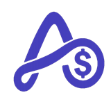
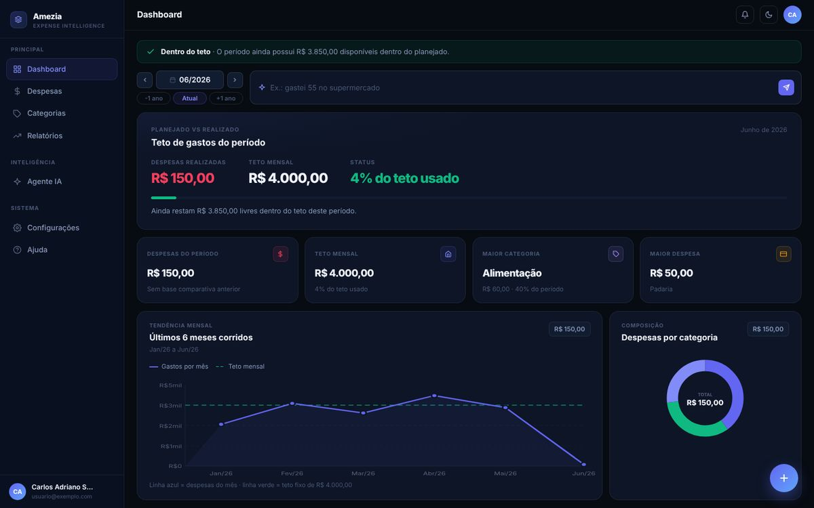
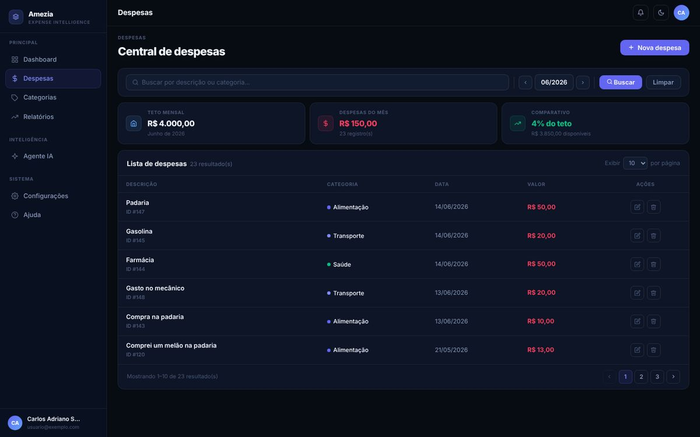
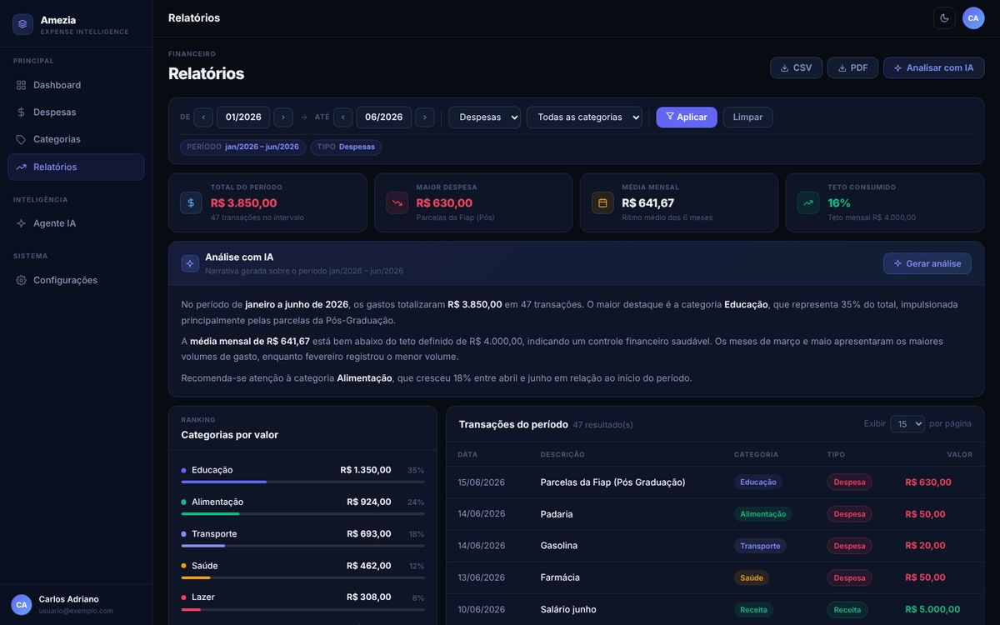

O que eu faço
Construo APIs, integrações e fluxos que sustentam aplicações web e mobile, da modelagem de dados às regras de negócio.
APIs, integrações e regras de negócio.
Python · FastAPI · PHP · PostgreSQL · Redis · Docker · APIs REST · Integrações · Modelagem de dados
Construo APIs e integrações que sustentam apps web e mobile, da modelagem de dados às regras de negócio.
/sobre
Sou formado em Computação pela Universidade Federal Fluminense e pós-graduado em desenvolvimento Full Stack pela PUC Minas e pela FIAP.
Construo APIs, integrações e fluxos que sustentam aplicações web e mobile, da modelagem de dados às regras de negócio.
Entendo o problema com o time e com o negócio antes de escrever código, priorizando soluções simples e fáceis de evoluir.
No backend de produtos digitais de segmentos diferentes: delivery, gestão de oficinas e CRM para o setor de energia solar.
Oportunidades como Software Engineer Backend, contribuindo com desenvolvimento de APIs REST, modelagem de dados e integração de serviços.
/experiencia
Experiência
mai 2023 — hoje
It Cast
Formação
/projeto-pessoal

Finanças pessoais no piloto automático.
Diga ao Amezia "gastei 50 no mercado", por texto, voz ou WhatsApp, e ele categoriza, salva e confirma o gasto. O agente de IA conhece o histórico financeiro real da pessoa e responde com contexto, sem precisar explicar tudo de novo.



Telas do projeto (protótipos de interface, com dados de exemplo).
Um pacote por contexto: auth, categorias, transações, conversas, relatórios, assinaturas, bot de WhatsApp e admin. Os routers só validam e chamam casos de uso, que dependem de interfaces, nunca de HTTP ou SQLAlchemy.
SQLAlchemy async com asyncpg e um worker ARQ com Redis para as chamadas de IA, o WhatsApp e outras operações pesadas.
O webhook responde na hora e entrega o trabalho para a fila. O processamento das mensagens é idempotente.
Toda consulta filtra por usuário. Telefone, descrições, títulos e resumos ficam criptografados em repouso com Fernet, e o telefone é indexado por HMAC. Login com JWT de curta duração, refresh token em cookie HttpOnly e Google OAuth2.
Angular 19 com componentes standalone e Signals, cada feature espelhando um contexto do backend, e i18n em runtime com Transloco.
Alembic com uma cadeia linear de migrações. Os testes do backend cobrem auth, categorias, transações, conversas, relatórios, assinaturas, feedback, admin e o bot de WhatsApp.
O código no GitHub é a edição de vitrine do projeto: uma cópia simplificada, publicada para consulta da arquitetura. Todos os direitos reservados.
/contato
Estou aberto a vagas de Software Engineer Backend e a projetos freelance.